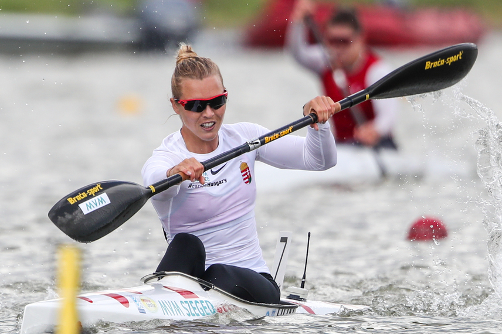
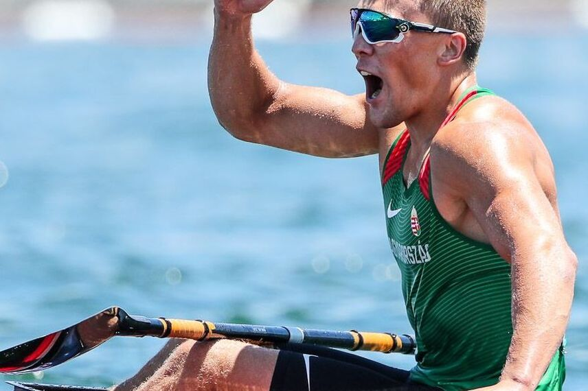
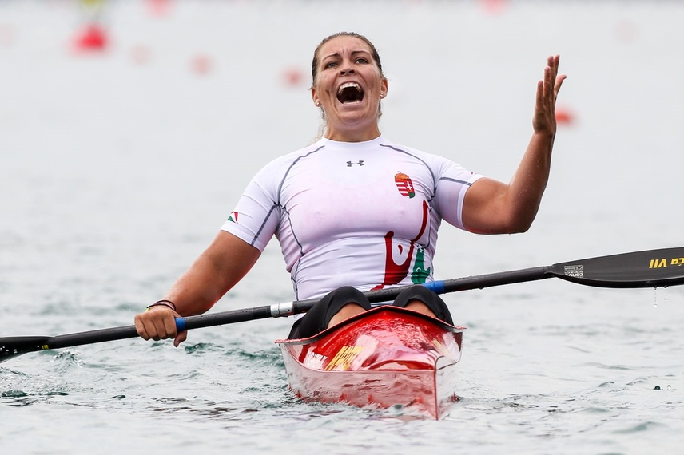

Akikre büszkék vagyunk...

Kárász Anna
- olimpiai bajnok (K–4 500 m, 2021)
- 4x világbajnok (K–2 200 m, 2014; K–4 500 m, 2014, 2018; K–2 500 m, 2018)
- 3x vb-2. (K–1 500 m, 2018; K–4 500 m, 2018, 2021)
- 5x Európa-bajnok (K–4 500 m, 2013, 2014, 2018, 2019, 2021)
- 3x Eb-2. (K–4 500 m, 2011; K–2 200 m, 2014; K–2 500 m, 2019)

Kopasz Bálint
- olimpiai bajnok (K–1 1000 m, 2021)
- olimpiai 4. (K–2 1000 m, 2021)
- világbajnok (K–1 1000 m, 2019)
- vb-2. (K-1 1000 m, 2021)
- 4x Európa-bajnok (K–1 1000 m, 2019, 2021; K–1 500 m, K-1 1000 m 2021)

Zsivoczky-Medveczky Erika
- olimpiai 4. (K–2 500 m, 2021)
- 8x világbajnok (K–1 1000 m, 2013, 2015; K–4 500 m, 2017, 2018, 2019; K–2 1000 m, 2017, 2018, 2019)
- 3x vb-3. (K–2 1000 m, 2009, 2011, 2014)
- 6x Európa-bajnok (K–2 1000 m, 2008, 2021; K–1 5000 m, 2014; K–4 500 m, 2017, 2018, 2019), (K–2 1000 m, 2008; K–1 5000 m, 2014; K–4 500 m, 2017, 2018)

Dombi Rudolf
- olimpiai bajnok (K–2 1000 m, 2012)
- vb-2. (K–2 500 m, 2014)
- vb-3. (K–2 1000 m, 2013)
- Európa-bajnok (K–2 1000 m, 2012)